Bloque VI: Conquista y Consolidación de la Democracia (1975 - Actualidad)
La liquidación de las estructuras franquistas, el proceso constituyente de 1978, la alternancia política y la plena inserción internacional de España.
 Eje cronológico que resume las grandes fases de la transición política y los gabinetes democráticos de España
Eje cronológico que resume las grandes fases de la transición política y los gabinetes democráticos de España
1. La Transición Democrática y el Gobierno de Adolfo Suárez (1975 - 1982)
Tras la muerte de Francisco Franco el 20 de noviembre de 1975, se inició en España un complejo y modélico proceso de transformación política, conocido históricamente como la Transición, que condujo al país de un régimen dictatorial de poder absoluto a un sistema democrático homologable a las democracias de la Europa occidental. El 22 de noviembre, Juan Carlos I de Borbón fue oficialmente proclamado rey de España de acuerdo con lo estipulado en la Ley de Sucesión, comprometiéndose inicialmente a respetar la legalidad vigente.
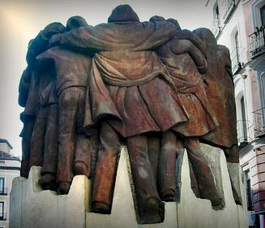
Imagen: El Abrazo, lienzo pintado por Juan Genovés en 1976, convertido en el gran símbolo artístico del anhelo de reconciliación nacional de los españolesLa primera andadura política se desarrolló bajo la presidencia del franquista inmovilista Carlos Arias Navarro (noviembre de 1975 - julio de 1976), cuyo gobierno pretendía realizar tímidas reformas administrativas pero manteniendo intacto el chiringuito del régimen. Este intento de "franquismo sin Franco" chocó frontalmente con el auge de la conflictividad social en las calles. Una masiva oleada de huelgas obreras, manifestaciones estudiantiles y campañas ciudadanas por la amnistía y las libertades pusieron a prueba la firmeza del Estado, alcanzando su clímax dramático en los trágicos sucesos de Vitoria en marzo de 1976, donde la represión policial de una asamblea obrera se saldó con cinco trabajadores fallecidos y más de 150 heridos.
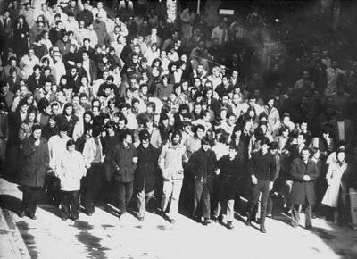
Imagen: Intervención militar en Vitoria durante los violentos enfrentamientos de marzo de 1976 que aceleraron el cese de Carlos Arias NavarroAnte la evidencia del fracaso represivo de Arias Navarro, el monarca forzó su destitución en julio de 1976 y nombró de forma imprevista como nuevo presidente del Gobierno a Adolfo Suárez, un joven y ambicioso político procedente del Movimiento Nacional. Suárez comprendió de inmediato que la única forma de consolidar la monarquía y garantizar la estabilidad era pilotar una ruptura pactada desde la propia legalidad del régimen franquista, siguiendo la famosa fórmula del jurista Torcuato Fernández-Miranda de avanzar "de la ley a la ley".
El pilar fundamental de este cambio fue la promulgación de la Ley para la Reforma Política en noviembre de 1976. Esta norma clave reconocía la soberanía popular como órgano supremo, garantizaba los derechos fundamentales de las personas y proponía la creación de unas Cortes bicamerales elegidas por sufragio universal para redactar una Constitución. Para asombro general, Suárez logró que las propias Cortes franquistas aprobaran la ley (lo que se conoció de forma metafórica como su "harakiri" corporativo), siendo posteriormente ratificada por la ciudadanía en referéndum en diciembre de 1976 con un arrollador 94% de votos afirmativos.
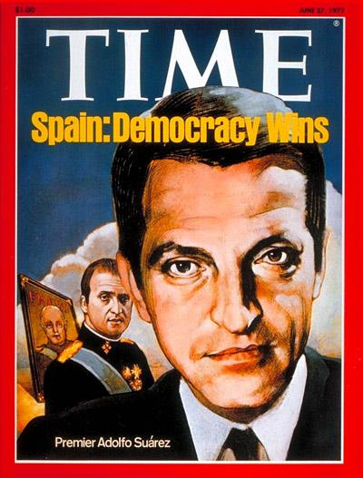
Imagen: Portada de la prestigiosa revista norteamericana TIME en 1977, retratando a Adolfo Suárez bajo el título 'Spain: Democracy Wins'A lo largo del convulso año 1977, el Gobierno se apresuró a desmantelar los resortes del franquismo mediante la disolución del Movimiento Nacional, la supresión de la censura de prensa y la promulgación de decretos de amnistía general para excarcelar a todos los presos políticos. Asimismo, se dio un paso crucial para la paz social legalizando las centrales sindicales tradicionales (UGT y CCOO) y los partidos políticos, incluyendo al histórico Partido Comunista de España de Santiago Carrillo el Sábado Santo de 1977, una audaz medida de Suárez que generó una altísima tensión en los sectores militares más derechistas del generalato.
El clímax de la agitación ultraizquierdista y el terrorismo de extrema derecha golpeó de forma trágica la capital en enero de 1977 con la pavorosa matanza de Atocha, donde pistoleros falangistas asesinaron a cinco abogados laboralistas afiliados al PCE. La respuesta popular fue una masiva y silenciosa manifestación de repulsa en las calles de Madrid que demostró la voluntad de reconciliación nacional de los españoles.
El 15 de junio de 1977 se celebraron las primeras elecciones generales democráticas desde la Segunda República. La consulta electoral arrojó el triunfo mayoritario de la coalición del centro-derecha reformista organizada por Suárez, la Unión de Centro Democrático (UCD), seguida muy de cerca por el PSOE de un joven abogado sevillano, Felipe González, que se consolidó como líder hegemónico de la izquierda por delante del debilitado PCE.
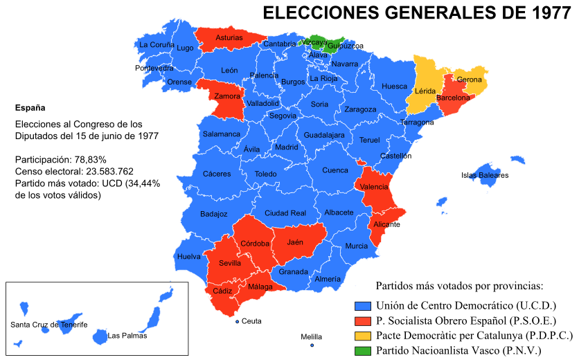
Distribución provincial de los partidos políticos mayoritarios tras los comicios generales constituyentes de 1977Para estabilizar la dramática situación económica del país (aquejado por las réplicas mundiales de la crisis del petróleo de 1973, con una inflación galopante superior al 26%, paro creciente y desabastecimiento energético), Suárez impulsó un histórico ejercicio de concertación social firmando en octubre de 1977 los Pactos de la Moncloa. En estos acuerdos, las principales fuerzas políticas, empresariales y sindicales aceptaron duros sacrificios colectivos (moderación salarial, devaluación de la peseta, control del gasto público) a cambio de una profunda reforma fiscal progresiva que dio luz al Impuesto sobre la Renta de las Personas Físicas (IRPF) y a la universalización de la Seguridad Social.
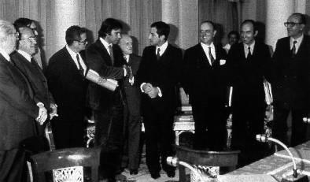
Imagen: Adolfo Suárez, Felipe González, Santiago Carrillo y Manuel Fraga en la firma del pacto socioeconómico de la Moncloa en 1977¿Quieres analizar el proceso político que desmontó la legalidad del franquismo de forma pacífica entre 1975 y 1977?
🎬 Vídeo complementario: Documental sobre la Transición Política Española ➡️2. La Consolidación Democrática y la Dinámica del Bipartidismo (1982 - 2011)
La UCD sufrió un rápido proceso de deterioro interno debido a las disensiones entre sus familias ideológicas, el acoso de la oposición, la escalada sangrienta de los atentados terroristas de la banda radical vasca ETA (que cometió sus peores masacres entre 1979 y 1980) y el descontento militar, lo que forzó la dimisión de Adolfo Suárez en enero de 1981. Durante el pleno de investidura de su sucesor, Leopoldo Calvo-Sotelo, un comando de la Guardia Civil dirigido por el teniente coronel Antonio Tejero asaltó el Congreso de los Diputados el 23 de febrero de 1981 (23-F) en un intento fallido de golpe de Estado militar.
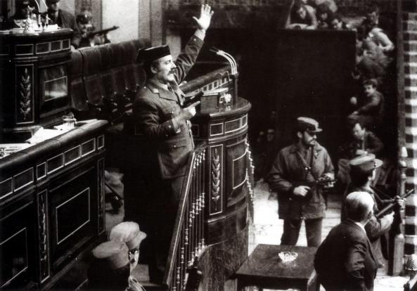
Imagen: El teniente coronel Antonio Tejero pistola en mano interrumpiendo la investidura en las Cortes del 23 de febrero de 1981La firme actitud en defensa de la legalidad constitucional del rey Juan Carlos I, dirigiéndose en directo a la nación de madrugada como Capitán General de los tres Ejércitos, desbarató la sublevación. Tras un brevísimo gobierno de Calvo-Sotelo, lastrado por la aprobación de la polémica ley de divorcio y la tragedia sanitaria de envenenamiento por aceite de colza desnaturalizado, se disolvieron las Cortes.
Las elecciones generales de octubre de 1982 dieron un triunfo arrollador al Partido Socialista Obrero Español (PSOE), que obtuvo más de diez millones de votos y la mayoría absoluta bajo el liderazgo de Felipe González. Se consolidó así un sólido modelo de bipartidismo imperfecto en el que el PSOE y el refundado Partido Popular (PP) se alternarían cómodamente en la gobernabilidad:
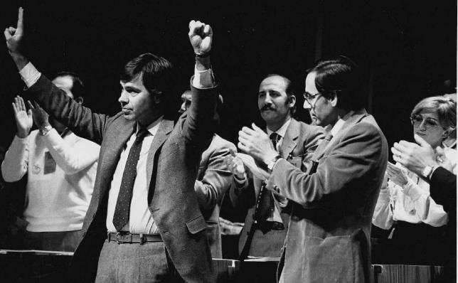
Imagen: Felipe González y Alfonso Guerra en el balcón del hotel Palace celebrando el histórico triunfo de la mayoría absoluta de 1982- Los años de gobierno socialista (1982 - 1996): Marcados por un ambicioso plan de modernización de las infraestructuras, educación y sanidad pública para fraguar el moderno estado del bienestar. Para sanear las cuentas ante las directrices europeas, se aplicó un doloroso proceso de reconversión industrial que cerró fábricas obsoletas y minas, desatando huelgas generales de gran calado convocadas por los sindicatos, como la célebre huelga general del 14-D en 1988 liderada por la propia UGT socialista. Su declive final se aceleró por la revelación de escandalosos casos de corrupción (Roldán, Rubio) y la revelación de la "guerra sucia" estatal contra ETA coordinada por los grupos armados ilegales GAL.
- Los gobiernos del Partido Popular de José María Aznar (1996 - 2004): Centrados en el saneamiento fiscal, la privatización de monopolios estatales para equilibrar el déficit público y cumplir los requisitos de la moneda única, logrando la implantación del euro en 2002. Sufrió una profunda contestación civil por su implicación directa en la invasión de Irak de 2003 y el desastre ecológico del Prestige en Galicia. Su ciclo concluyó tras los dramáticos atentados yihadistas del 11-M de 2004 en los trenes de cercanías de Madrid, que provocaron la muerte de 193 ciudadanos.
- El retorno del PSOE con José Luis Rodríguez Zapatero (2004 - 2011): Iniciado con la inmediata retirada de las tropas de Irak. Su mandato se caracterizó por la ampliación de los derechos civiles (matrimonio homosexual, Ley de Dependencia, Ley de Igualdad de Género) y la reforma de Estatutos regionales, pero se vio gravemente truncado por el impacto devastador de la crisis financiera mundial de 2007 (desencadenada por las hipotecas subprime y el estallido del boom inmobiliario nacional). El paro se disparó por encima de los cuatro millones y el Gobierno se vio obligado a decretar drásticos planes de recortes y austeridad exigidos por la Eurozona, lo que desató la protesta civil masiva de los indignados en las plazas con el histórico movimiento del 15-M en 2011.
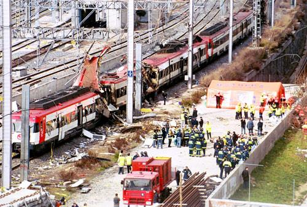
Imagen: Atentados -11 M, en la estación de Atocha, Madrid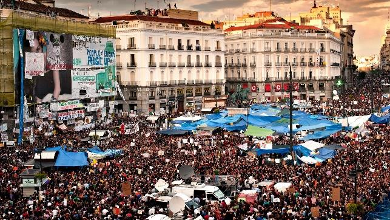
Imagen: Miles de jóvenes acampados en Sol en mayo de 2011 protestando contra las medidas de recortes e inaugurando un cambio estructural en el mapa de partidos
3. La Constitución de 1978 y el Modelo de Estado de las Autonomías
La Carta Magna de 1978 representa el hito más perdurable del proceso de consenso y acuerdo de la Transición. Redactada de forma secreta y plural por una comisión de siete ponentes parlamentarios (conocidos como los "padres de la Constitución"): Gabriel Cisneros, Miguel Herrero de Miñón y Pedro Pérez-Llorca por la UCD; Gregorio Peces-Barba por el PSOE; Manuel Fraga por AP; Jordi Solé Tura por el PCE; y Miquel Roca por la minoría catalana. Fue ampliamente refrendada por el pueblo español el 6 de diciembre de 1978 con un 87% de apoyos en las urnas.
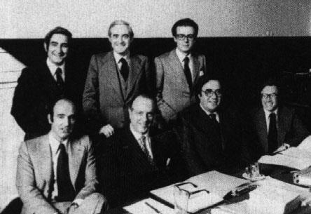
Imagen: Los siete redactores constitucionales representantes de la pluralidad ideológica que forjó el consenso de 1978Sus rasgos institucionales definen de forma irrevocable la estructura política de España contemporánea:
- La forma política del Estado: España se constituye formalmente como una monarquía parlamentaria, donde el monarca ostenta el papel de Jefe del Estado con funciones meramente simbólicas y de representación internacional. La Corona queda desprovista de cualquier potestad legislativa o ejecutiva.
- El origen de la soberanía: Se proclama la soberanía popular, residiendo el poder de forma exclusiva en el conjunto de los ciudadanos de los que emanan los poderes constitucionales.
- La separación de poderes:
- El poder legislativo reside en unas Cortes bicamerales elegidas por sufragio universal: el Congreso de los Diputados y el Senado.
- El poder ejecutivo es ejercido de forma directa por el Gobierno de la Nación.
- El poder judicial reside en un cuerpo de jueces independientes y se crea el Tribunal Constitucional para velar por las garantías legales.
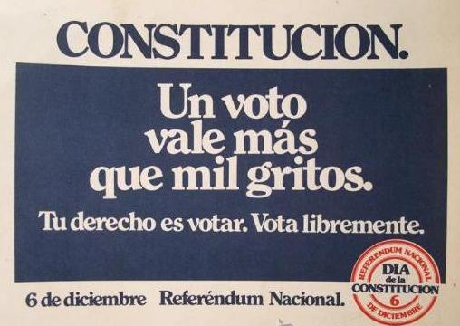
Imagen: Cartel publicitario institucional editado por el Gobierno de España que invitaba al voto afirmativo bajo el lema "A favor de todos"El Modelo Territorial: El Estado de las Autonomías
El título VIII de la Constitución, "De la Organización Territorial del Estado", resolvió uno de los mayores problemas históricos de España sustituyendo el centralismo franquista por un modelo de amplia descentralización político-administrativa denominado Estado de las Autonomías. El texto constitucional compatibiliza la indisoluble unidad de la nación con el reconocimiento y garantía del derecho a la autonomía de las diversas nacionalidades y regiones.
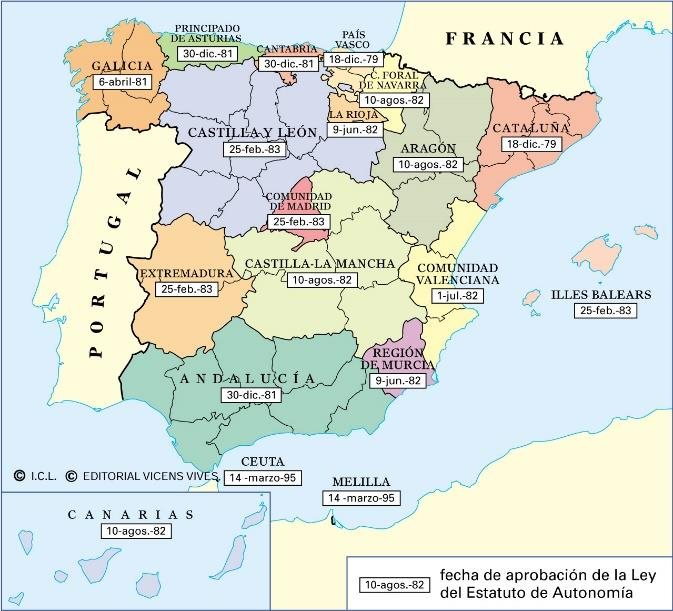
Estructura autonómica resultante de las diecisiete comunidades y dos ciudades autónomas reguladas por sus respectivos EstatutosA través de un complejo proceso legislativo desarrollado entre 1979 y 1983, España quedó estructurada en 17 comunidades autónomas y dos ciudades autónomas (Ceuta y Melilla en 1995). Cada territorio cuenta con su propia Asamblea Legislativa, presidente regional, Gobierno autonómico y un Estatuto de Autonomía aprobado por las Cortes Generales que delimita las competencias transferidas (educación, sanidad, ordenación del territorio) frente a las competencias que la Constitución reserva de forma exclusiva para el Estado (defensa, política exterior, hacienda general).
4. El Impacto de la Integración Europea e Internacional de España
Uno de los mayores éxitos de consolidación democrática residió en romper el aislamiento diplomático del franquismo e insertar plenamente a España en la arquitectura institucional occidental. Este proceso se completó en la década de los ochenta a través de dos grandes hitos:
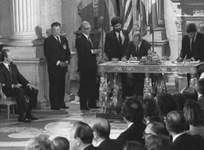
Imagen: El presidente Felipe González firmando el Tratado de Adhesión en el Palacio de Oriente de Madrid, formalizando el ingreso español en Europa- La entrada en la OTAN y el Referéndum de 1986: El gabinete conservador de Leopoldo Calvo-Sotelo formalizó en 1982 el ingreso de España en la Alianza Atlántica (OTAN), una medida que contó con la frontal y activa oposición de los partidos de izquierda dirigidos por el PSOE. Sin embargo, al asumir la presidencia, Felipe González modificó pragmáticamente su postura comprendiendo que la permanencia en la OTAN facilitaría la modernización de las Fuerzas Armadas y consolidaría el prestigio internacional. Para legitimarlo, convocó el histórico referéndum de la OTAN en marzo de 1986. Bajo una intensa campaña gubernamental pidiendo el "sí" bajo ciertas condiciones (no integración militar, no almacenamiento de armas nucleares), el Gobierno obtuvo una indiscutible victoria en las urnas.
- La adhesión a la Comunidad Económica Europea (CEE) en 1986: El 12 de junio de 1985 se firmó de forma solemne el Tratado de Adhesión a las Comunidades Europeas, entrando en vigor de pleno derecho el 1 de enero de 1986. Esta adhesión, respaldada de forma unánime por todas las fuerzas políticas del país, obligó a España a acogerse a directrices fiscales y monetarias comunes (creando el IVA) y a modernizar el sector productivo para integrarse en la Eurozona con la devaluación inicial de la peseta.
A cambio de estos compromisos de ajuste fiscal y control del déficit, España se convirtió en receptora de masivas inyecciones de fondos europeos de cohesión y estructurales, lo que financió una enorme modernización de las autovías, telecomunicaciones y proyectos de innovación, consolidando un crecimiento récord del PIB y acelerando la homogeneización social de España con sus socios comunitarios.
5. Singularidad del Proceso en la Comunidad Autónoma de Canarias
La Transición Española y el posterior desarrollo autonómico e integración europea adquirieron en el archipiélago canario un perfil de singularidad histórica, condicionado por la insularidad, la lejanía geográfica y sus equilibrios socioeconómicos:
- El Pleito Insular y la Solución Provincial: La histórica rivalidad entre las élites de Las Palmas y de Santa Cruz de Tenerife —mitigada tras la división provincial en dos circunscripciones aprobada bajo la dictadura de Primo de Rivera en 1927— reapareció durante el proceso preautonómico de 1978. La Transición resolvió este foco de tensión mediante el modelo de capitalidad compartida entre Santa Cruz de Tenerife y Las Palmas de Gran Canaria (con la sede fija del Parlamento de Canarias en Tenerife y la sede de la Delegación del Gobierno en Gran Canaria), junto con la consolidación de los Cabildos Insulares como pilares del gobierno de cada isla.
- La Oposición e Inoperancia del Independentismo Radical (MPAIAC): Frente a la vía democrática, Antonio Cubillo dirigió desde su exilio en Argelia el MPAIAC (Movimiento por la Autodeterminación e Independencia del Archipiélago Canario). Durante la década de 1970, la organización combinó la propaganda radiofónica en La Voz de Canarias Libre con acciones terroristas y propaganda armada, provocando una fuerte repulsa social que derivó en su total desacreditación y marginación política.
- El Impacto del Referéndum de la OTAN en Canarias (1986): La consulta sobre la permanencia de España en la OTAN en 1986 generó una masiva movilización social. Las fuerzas de la izquierda y del nacionalismo canario promovieron el voto negativo ante el temor a una militarización del archipiélago. El «No» se impuso mayoritariamente en Canarias, condicionando la política de defensa del Estado en el archipiélago.
- El Estatuto de Autonomía de 1982 y las Reformas del REF: Las Cortes aprobaron el Estatuto de Autonomía de Canarias en agosto de 1982 (complementado por la LOTRAVA o Ley Orgánica de Transferencias), siendo posteriormente reformado en 1996 y 2018. Para proteger las especificidades insulares, se blindó el Régimen Económico y Fiscal (REF), cuyo marco se modernizó en 1994 introduciendo instrumentos de incentivo fiscal como la Reserva para Inversiones en Canarias (RIC) y la Zona Especial Canaria (ZEC).
- La Integración en la Europa Comunitaria (Del Protocolo 2 al Estatuto RUP): Con la adhesión de España a la Comunidad Económica Europea (CEE) en 1986, Canarias negoció una fórmula específica a través del Protocolo 2 para preservar las franquicias comerciales y proteger las exportaciones agrícolas de tomates y plátanos. En 1991, el archipiélago aprobó su integración plena en la unión aduanera, logrando posteriormente el reconocimiento definitivo de Canarias como Región Ultraperiférica (RUP) en el Tratado de Ámsterdam (1997), garantizando un trato diferenciado y ayudas a la lejanía en el derecho comunitario.
6. España en la Actualidad (2011 - 2026): Retos y Realidad Sociopolítica
El ciclo del bipartidismo imperfecto entró en una profunda crisis de representación a partir del año 2015 con la irrupción de nuevas fuerzas parlamentarias estatales (Podemos en el ala de la izquierda alternativa y Ciudadanos en el centro liberal), fragmentando la composición del Congreso de los Diputados. Tras la abdicación forzada de Juan Carlos I en su hijo el rey Felipe VI en junio de 2014, el gabinete conservador de Mariano Rajoy (2011 - 2018) tuvo que hacer frente a la crisis soberanista de Cataluña, aplicando por primera vez el artículo 155 de la Constitución en 2017 para suspender el autogobierno catalán tras la celebración ilegal de un referéndum de autodeterminación promovido por Carles Puigdemont.
En el año 2018, la condena por tramas de corrupción del PP motivó una histórica moción de censura presentada con éxito por el líder socialista Pedro Sánchez, quien conformó el primer Gobierno de coalición (PSOE - Unidas Podemos) de la andadura contemporánea. El nuevo Gobierno debió coordinar la severa gestión sanitaria de la pandemia de COVID-19 decretando el estado de alarma nacional en marzo de 2020, asumiendo posteriormente los reajustes energéticos de la guerra de Ucrania de 2022.
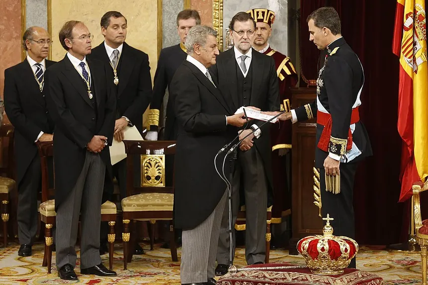
Imagen: El juramento solemne de Felipe VI ante el Congreso en junio de 2014 tras firmarse el cese de funciones del rey emérito Juan Carlos I⚖️ Síntesis Forense: España en la Actualidad (2026)
La gobernabilidad de España en el horizonte de 2026 continúa caracterizada por una profunda fragmentación parlamentaria y bloques polarizados, bajo el liderazgo del gobierno de coalición presidido por Pedro Sánchez. Socialmente, el país afronta grandes desafíos estructurales como el progresivo envejecimiento demográfico, la gestión de los flujos migratorios y el encarecimiento crónico de la vivienda, catalizando nuevas oleadas de contestación cívica y debates en torno al modelo de cohesión intergeneracional.
Desde el punto de vista económico, tras superar las distorsiones inflacionarias derivadas de las tensiones geopolíticas en Ucrania y Oriente Medio, España muestra una notable resiliencia en su PIB, impulsada por el dinamismo de las exportaciones de servicios y el turismo de masas, que registra récords históricos en regiones clave como Canarias. Sin embargo, persisten debilidades históricas estructurales, tales como una elevada deuda pública y tasas de desempleo juvenil que doblan la media comunitaria, lo que obliga a optimizar la canalización de los fondos europeos de recuperación e impulsar la transición ecológica y digital.